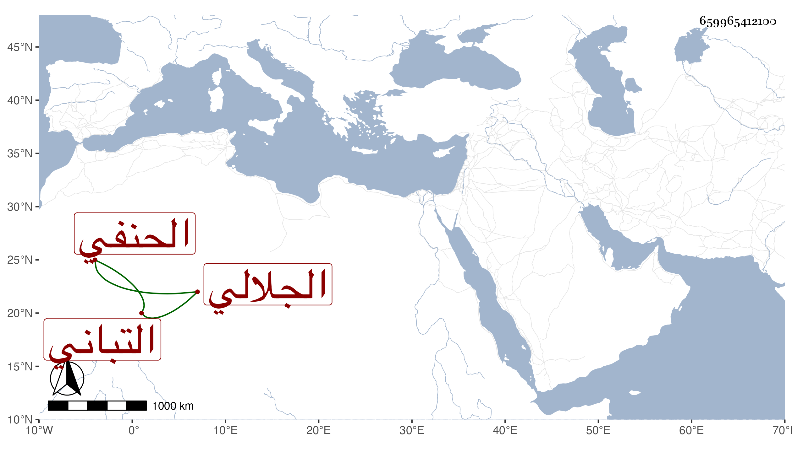

0902Sakhawi.DawLamic.ITO20230111-ara1.EIS1600.659965412100
Biography ID: 659965412100
606
محمد بن علي الشمس أبو عبد الله بن العلاء أبي الحسن الجلالي بالتخفيف نسبة لجلال الدين التباني والد حافظ الدين أحمد الماضي الحنفي ويعرف بالجلالي . اشتغل في فنون وتميز وولي تدريس الحنفية بالألجيهية وخزن الكتب بالمحمودية وتكسب بالشهادة ، وكان عاقلا خيرا لطيف العشرة ، ومن شيوخه مصطفى بن تقطمر النظامي الحنفي والشمس أبو عبد محمد بن أحمد بن عبد الله الدفري المالكي أخذ عنهما البخاري قراءة على أولهما وسماعا على الآخر وحدث به قرأه عليه التقي عبد الغني بن الشهاب بن تقي المالكي . مات بعد الستين وقد قارب الستين رحمه الله وإيانا .
